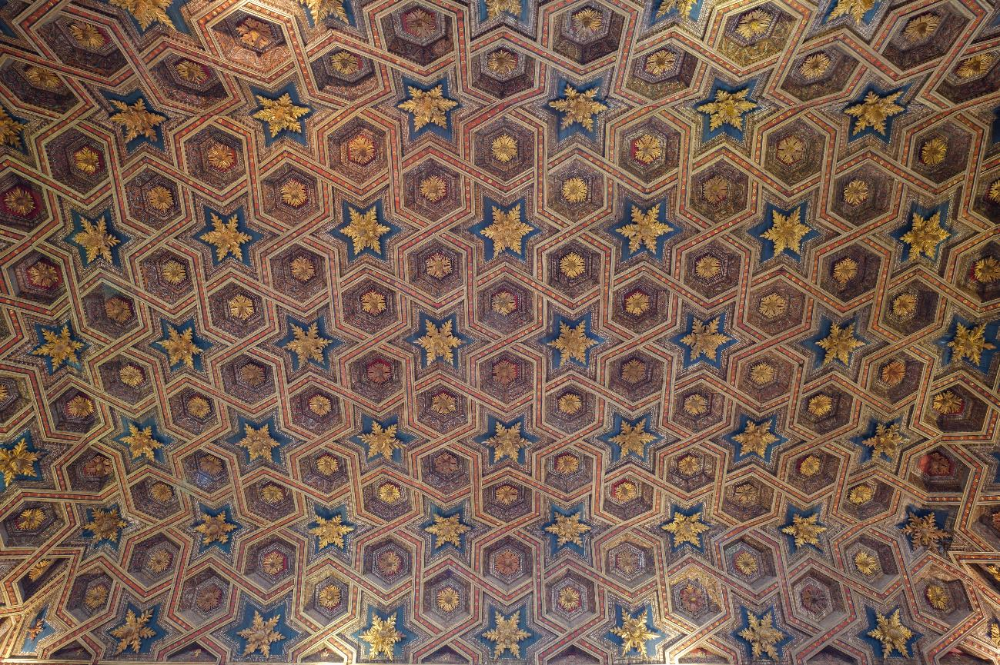
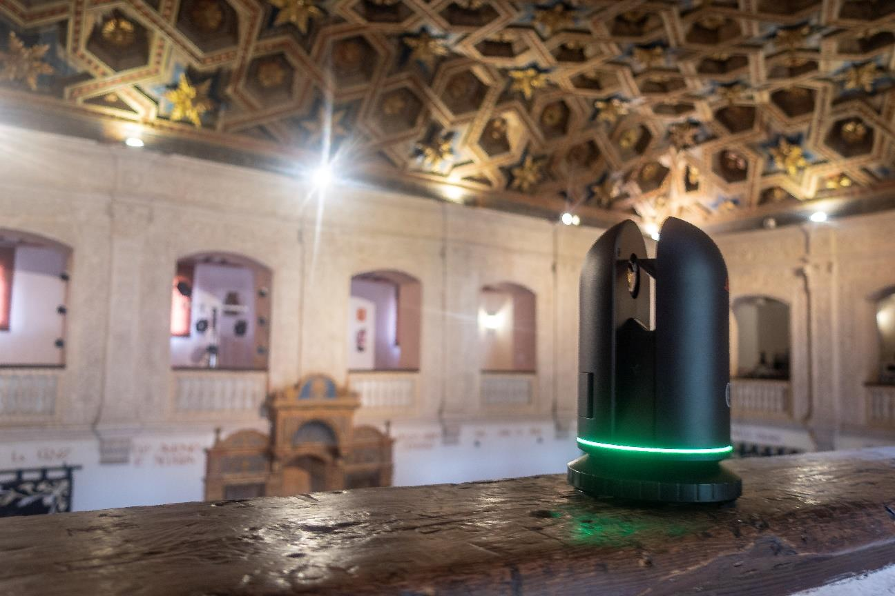
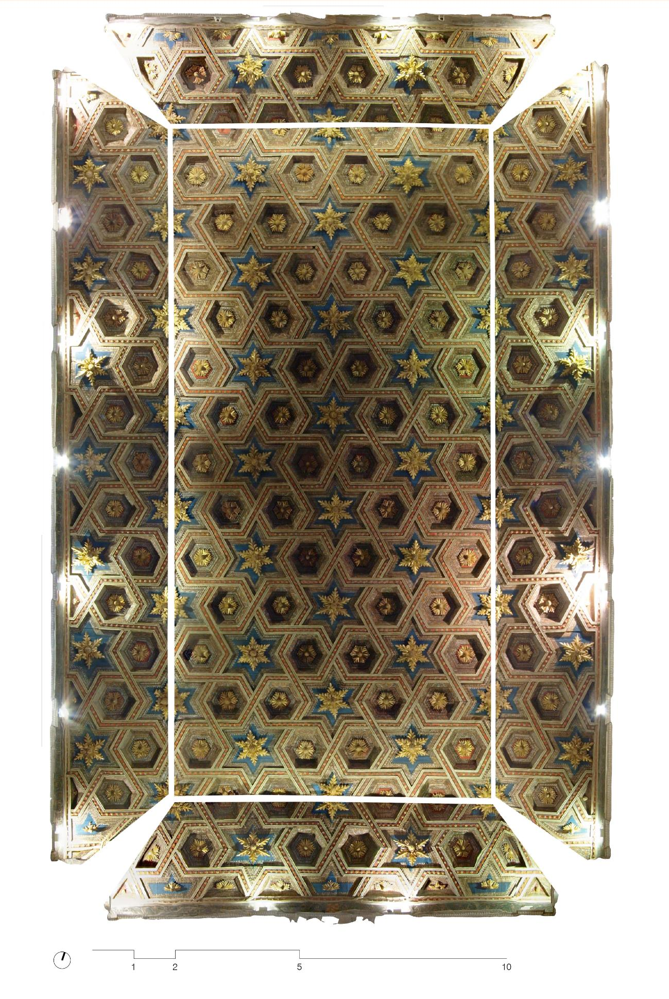
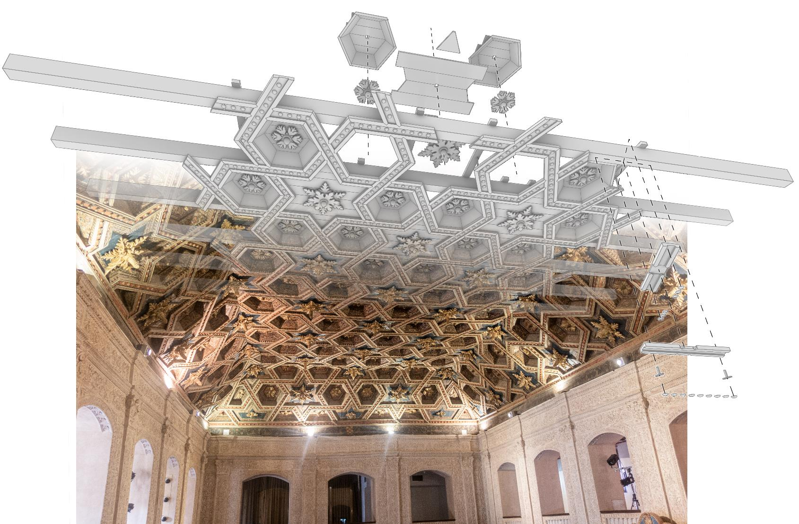

Document the place
Historic and archival research traces the University, the Paraninfo, and the ceiling’s design, influences and restoration.
Bachelor’s thesis · 2025 · Architecture
A geometric and construction analysis of the 16th-century coffered ceiling in the Paraninfo at the University of Alcalá.
Original title: El artesonado del Paraninfo de la Universidad de Alcalá: análisis geométrico y constructivo.

The Paraninfo, the University of Alcalá’s historic ceremonial hall, is one of its most distinctive rooms. At its centre, a richly decorated timber ceiling combines an intricate geometric pattern with a complex construction. This thesis brings its history, measured form and craft into a single study.
Historic and archival research traces the University, the Paraninfo, and the ceiling’s design, influences and restoration.
A combined survey uses a Leica BLK360 laser scanner and photogrammetry to create precise, detailed drawings of the ceiling.
The measured model reveals the relationships behind the ceiling’s geometric pattern, including its hexagonal coffers and stars.
The study interprets the concealed timber framework, the sequence of assembly, and the irregularities recorded in the structure.
Survey & interpretation
Original photographs and drawings from the research trace how the ceiling was documented, assembled into a full image, and studied as a construction.



An integrated architectural record
By bringing historical research together with laser scanning, photogrammetry and architectural analysis, the project offers a detailed record of a singular piece of sixteenth-century craftsmanship—and a clearer understanding of its formal and constructional value.
Discuss the research